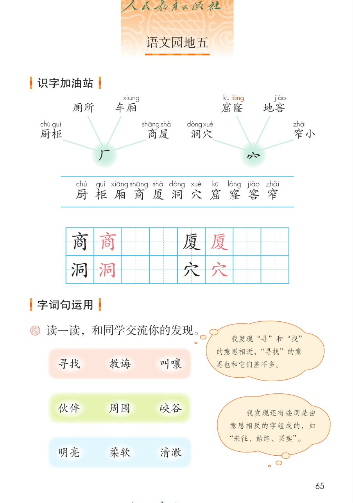
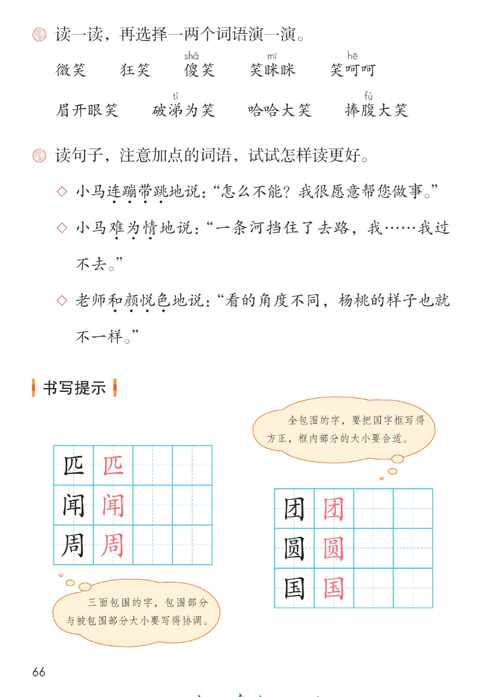
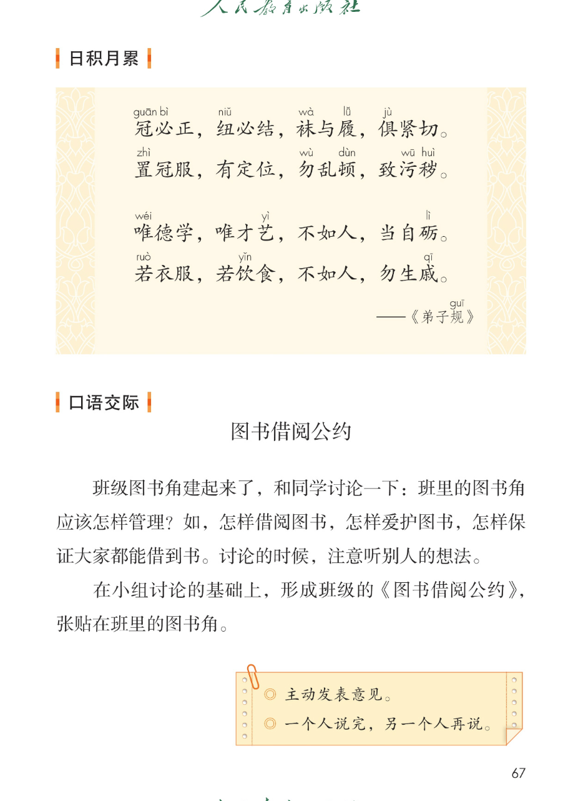
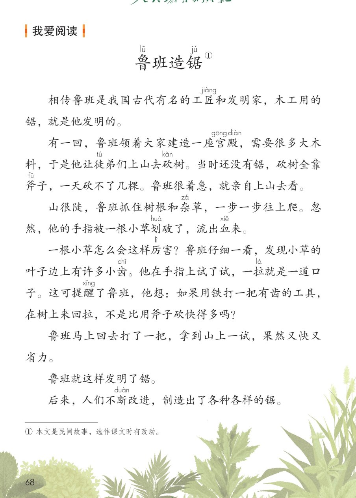

×
🔊 手机听不到声音怎么办？
① 先把手机
媒体音量调大 ，确认没开静音、没连蓝牙耳机；在微信里打开的，点右上角「⋯ → 用浏览器打开」。
② 还是没声音？到应用商店免费下载
Microsoft Edge 浏览器 （它自带朗读发声），用它打开本页面就能出声。
③ 换了 Edge 仍然没声音，说明这部手机的
硬件/系统不支持 网页朗读（多为老旧机型）；近几年买的新手机一般都能正常播放。
→ 打开声音自检
统编版 · 二年级下册 · 第五单元
第五单元 · 阅读 · 办法与道理
单元综合课件：语文园地五 · 口语交际 · 我爱阅读
部首词语 8 个
会认 11 字
会写 4 字
弟子规节选
闯关 8 题
这个单元学了什么： 三篇课文都在讲动脑筋、想办法 ——补牢不嫌晚、换个角度看一看、亲自试一试才知道。
语文园地五把本单元用到的识字部首、相近字组词、笑的词语、朗读语气、包围结构写字、《弟子规》、口语交际、读故事 收一收、用一用。点一下任一卡片或句子，就能听。
课本第 65 页
点词听读音，点蓝线行听全行
课件引导： 下面两组词语，课本分别归在「厂」和「穴」的下面——都和房屋、住处 有关。读一读，认一认带拼音的字。
🏗 厂
厨chú 柜guì 厕所
车厢xiāng
商shāng 厦shà
🕳 穴
洞dòng 穴xué 窟kū 窿lóng 地窖jiào
窄zhǎi 小
厨chú 柜guì 厢xiāng 商shāng 厦shà 洞dòng 穴xué 窟kū 窿lóng 窖jiào 窄zhǎi
📌 注音按课本照录：蓝线行 11 个字全部标音 ；「厕所」的厕、「地窖」的地课本未标音，不另加注。
课本第 65 页两条蓝线之间那一行，按课本顺序
田字格：商 厦 ／ 洞 穴（黑色是范字，红色是描红）
课本第 65~66 页
课本第 65 页
题目（课本原文）： 读一读，和同学交流你的发现。
第 1 行
寻找 教诲 叫嚷
寻和找、教和诲、叫和嚷，意思相近
第 2 行
伙伴 周围 峡谷
伙和伴、周和围、峡和谷，意思相近
第 3 行
明亮 柔软 清澈
明和亮、柔和软、清和澈，意思相近
课本气泡一（原话）： 我发现「寻」和「找」的意思相近，「寻找」的意思也和它们差不多。
课本气泡二（原话）： 我发现还有些词是由意思相反 的字组成的，如「来往、始终、买卖」。
📌 三行词都是意思相近的字 组成的；课本气泡二提醒我们，还有意思相反 的字组成的词（来往、始终、买卖）——两种构词都要留心。每行里的具体发现，答案不唯一 。
课本第 66 页
题目（课本原文）： 读一读，再选择一两个词语演一演。
📌 九个词都在写笑 ，但笑的样子和程度不同：微笑最轻，狂笑、哈哈大笑、捧腹大笑最响。「演一演」由你选词表演，答案不唯一 ；卡片上的词语解释是课件补的参考 。
课本第 66 页
题目（课本原文）： 读句子，注意加点的词语，试试怎样读更好。
◇ 小马连蹦带跳
◇ 小马难为情
◇ 老师和颜悦色
📌 这三句都出自本单元课文 （小马过河 / 小马过河 / 画杨桃）：连蹦带跳读得又轻又快 、透着高兴；难为情读得慢、吞吞吐吐 ；和颜悦色读得温和亲切 。怎样读更好，多试几遍，答案不唯一 。
课本第 66 页
黑色是范字，红色是描红
课本气泡一（原话）： 三面包围的字，包围部分与被包围部分大小要写得协调 。
课本气泡二（原话）： 全包围的字，要把国字框 写得方正 ，框内部分的大小要合适 。
📌 照范字描红，先观察再动笔：匹、闻、周是三面包围 ，注意开口那一边；团、圆、国是全包围 ，国字框要写方正、框内不顶边。
课本第 67 页
点一句读一句
日积月累 · 弟子规（节选）
冠guān 必bì 正，纽niǔ 必结，袜wà 与履lǚ ，俱jù 紧切。
置zhì 冠服，有定位，勿wù 乱顿dùn ，致污wū 秽huì 。
——《弟dì 子规guī 》
四句话在说什么： 前两句讲穿戴与摆放 ——帽子戴正、纽扣系好，衣帽放在固定的地方；后两句讲做人 ——本领不如别人要自己加把劲 ，吃穿不如别人不必难过 。
📌 注音按课本逐处照录（冠 必 纽 袜 履 俱 置 勿 顿 污 秽 唯 艺 砺 若 饮 戚 + 弟规），未标音的字不另加注。
🎯 背诵闯关（三步）
🔊 四句连起来读
第一步： 跟读，一句一句跟着读。第二步： 看提示背，只看每句的第一个字。第三步： 合上书背一遍，再对照课本。
课本第 67 页
讨论 · 形成公约
题目（课本原文）： 班级图书角建起来了，和同学讨论一下：班里的图书角应该怎样管理？
如，怎样借阅图书 ，怎样爱护图书 ，怎样保证大家都能借到书 。讨论的时候，注意听别人的想法 。
在小组讨论的基础上，形成班级的《图书借阅公约》 ，张贴在班里的图书角。
1
围绕三个问题讨论
借阅 · 爱护 · 保证大家都能借到（都出自课本题干）
3
形成公约并张贴
把小组意见合成班级公约，贴到图书角
📌 公约内容由全班讨论形成，答案不唯一 ；上面「三步」是课件补的讨论路径 ，方便一步步开展。
鲁lǔ 班造锯jù 》①
课本第 68 页
点一段读一段，注音按课本随文照录
读前想一想： 木工用的锯是鲁班 发明的。他是被什么启发的？读一读：一根小草怎么帮他造出了锯？
一根小草怎么会帮鲁班造出了锯？把他的想法连起来说一说。
💡 留心观察 + 大胆想法： 小草划破了手指，鲁班仔细观察 ，发现叶子边上有小齿 ，一拉就是一道口子——于是想到用铁打一把有齿的工具 在树上来回拉。
和本单元连起来看： 补牢不嫌晚（寓言二则）→ 换个角度看一看（画杨桃）→ 亲自试一试（小马过河）→ 留心身边的小事，也能有大发明 （鲁班造锯）。
词语积累（取自故事）
工匠 ——手艺高超的手工业劳动者宫殿 ——规模宏大华丽的房屋提醒 ——从旁指点，引起注意省力 ——少花力气
这个故事告诉我们
遇到问题仔细观察 ，答案常藏在身边。
有了想法马上试一试 ，果然又快又省力。
后来人们不断改进 ，好东西越做越好。
点选项就判对错，答完自动算分
已经答 0 题，答对 0 题。
点图放大

第 65 页 · 识字加油站 · 字词句运用

第 66 页 · 笑词语 · 读句子 · 书写提示

第 67 页 · 日积月累 · 口语交际

第 68 页 · 我爱阅读《鲁班造锯》